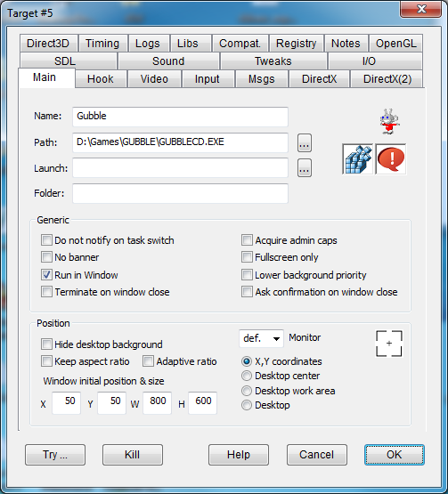
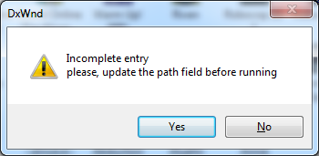
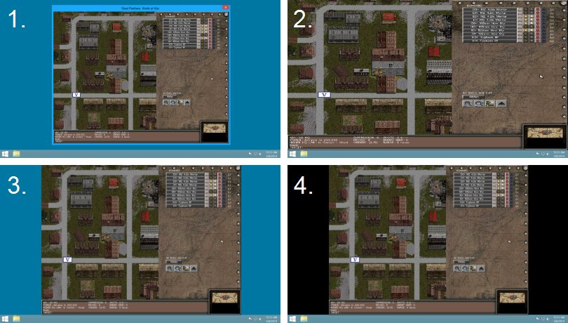

Check out the Beginner's Tutorial
|
Name |
Allows you to choose a descriptive name for this entry. For example, if DxWnd is hooking two releases of a program, you can mention each entry's version number in the name. If you don't set a name, DxWnd sets the field by default with the task's filename or, if you selected the "Name from folder" global option, with the task folder name. |
|
Path |
The executable pathname of the task to be activated/hooked. The field should hold the full pathname of the task that DxWnd will search in the list of active processes and hook when it finds the corrispondence. There are special cases depending on the first pathname character: If the pathname first character is an asterisk '*' this will work as a wildcard for anything that precedes the remaining part of the path. This can be used to hook a well identified program no matter where it is located on the system folders. But this feature should not e abused because DxWnd will hook any process with a matching path, and if this is generic enough DxWnd could hook processes that were not meant to! In addition, the wildcard won't allow DxWnd to run the process directly from its interface. If the pathname first character is a question mark '?' this means that the initial part of the pathname is unspecified and DxWnd will ask yo to complete the field before running the program. This allows to distribute export files that do not contain specific full pathnames that match only the originator's machine and automatically remind whoever imports them to complete the field before trying to use this imported configuration.  NOTE: Only 32-bit executables are currently supported. |
|
Launch |
In some cases, the program to be hooked can't be run by launching itself directly, but needs arguments or other environment elements provided by some frontend parent program. To simplify the program's activation, enter the frontend's pathname here. When set, the Run command runs the chosen frontend launcher rather than the path in the Path field above. |
|
Folder |
When you run a program through the DxWnd interface, the program execution path is not set by default. The program location folder is used as the execution folder. This works for most programs, but some need to start from a different path. Enter a path in this text box to specify a different execution path parameter. |
|
Do not notify on task switch |
UNNOTIFY |
Inhibits the task switch notification message that may hurt some games not designed to handle it properly. For example if the game window disappears when you click outside of it try enabling this flag. |
|
No banner |
NOBANNER |
Well, DxWnd celebrates itself a little by showing a very short splash screen at the beginning. If you're not happy with this, checking this flag will disable the show. The banner is enabled by default because it helps finding out whether and when the hook takes place and detects the beginning of a fullscreen condition, so it helps finding the correct DxWnd configuration for a new game. The banner includes a short animation with light effects, but if you prefer a shorter and simpler animation you only have to delete the dxwanim.bmp file from the DxWnd folder. In case the configuration includes some (probably forgotten) debug flag, then the banner changes its picture to remind you. See below the normal banner (left) and the banner when debug flags are set (right). |
|
Run in window |
WINDOWIZE |
Checked by default, tells DxWnd to try to run the program in windowed mode, as that is the essential reason why DxWnd exists. If not checked, DxWnd still performs all other functions not related to the screen size, such as time stretching, compatibility options, and so forth. |
|
Terminate on window close |
TERMINATEONCLOSE |
Immediately terminates the application when you close the window. |
|
Acquire admin caps |
NEEDADMINCAPS |
Hooking the game requires running DxWnd as an administrator. If you set this flag and run DxWnd without administrator privileges, running a game from the DxWnd interface will show a dialog box prompting you to elevate the permissions level. When you confirm this, DxWnd will automatically terminate and restart itself. If you don't see its window anymore, look beneath other windows, as it may lose its Z-order when it restarts. |
|
Fullscreen only |
FULLSCREENONLY |
Forces applications to be considered always in fullscreen mode, helping DxWnd to set them in window mode when the fullscreen condition is not automatically detected. |
|
Lower background priority |
BACKGROUNDPRIORITY |
A simple change of priority class when the game gets/loses focus. This is meaningful only for old games that were NOT developed to suspend themselves whenever going idle. |
|
Ask confirmation on window close |
CONFIRMONCLOSE |
Asks you for confirmation when you close the window. |
|
Use short path |
USESHORTPATH |
Legacy flag for use only in WinXP to support Win9x compatibility layer. Beware: this option is visible and available on WinXP platform only since it is useless on more recent systems. |
Example: 1. Desktop center, 2. Desktop work area, 3. Desktop work area + Keep aspect ratio, 4. Desktop work area + Keep aspect ratio + Hide desktop background

The following flags have an effect only when the "run in window" option is selected (with the WINDOWIZE flag).
|
Hide desktop background |
HIDEDESKTOP |
Starts the windowized program together with four black borderless windows that surround it entirely, eliminating distracting background windows and providing a more focused gaming experience. The whole idea was borrowed from "Mr. Hide." Note: in some cases the black window used as a background panel can interfere with the target program. In this case it is possible to run an external and independent tool to perform the same task by using the DxWnd menu command Tool -> Run "blacker". |
|
Keep aspect ratio |
KEEPASPECTRATIO |
When the window is resized, the aspect ratio set by the window initial size is preserved (by default the 4:3 aspect ratio such as 800x600). Selecting a fake fullscreen mode calculates the aspect ratio according to the window's initial aspect ratio. This way, you can have fake fullscreen modes with ratios other than 4:3 - for example, set a width of 16 and a height of 9 to fill a 16:9 widescreen monitor. |
|
Adaptive ratio |
ADAPTIVERATIO |
The rendered area dynamically assumes the same aspect ratio as the virtual desktop resolution. This is useful when DxWnd is configured for fake-fullscreen modes and a program uses different resolutions that don't have all the same aspect ratio (es. Cossacks II). |
|
Window initial position & size |
Four values for the initial X, Y coordinates of the upperleft window corner and the window width (W) and height (H). All values are referred to the window client area rather than the outside border. The values are used depending on the Position selection: for "X, Y" coordinates they are all used, for "Desktop center" DxWnd automatically centers the position and uses only the height and width, and in the remaining fake-fullscreen modes the height and width are used only as a reference for the desired aspect ratio when "Keep aspect ratio" (the KEEPASPECTRATIO flag) is set (if it has not been set, the height and width are ignored). |
|
|
Monitor |
For almost all window position modes (except the "X,Y coordinates" mode), multi-screen configurations require you to specify which monitor the configuration refers to. For instance, if you select "centered," you probably want it centered on a specific monitor rather than in the entire extended desktop. The drop-down selector has a "def." ("default") option, referring to the primary monitor, and a number for each specific monitor. |
|
|
Coordinate picker |
This icon activates a mechanism to pick the new program placement coordinates (see "Window initial position & size" above) using an existing window on the desktop. Click and drag from the icon to the desired window to automatically fill in the "Window initial position & size" fields with these window coordinates. Release the mouse button while over the title bar or an empty area in the desired window, as releasing the mouse button over a widget (like a text field, button, or other object) will select coordinates for that widget rather than the entire window. |
|
|
Position |
A selection of 4 possible cases:
Note that the first two modes are windowed modes, while the last two modes can be considered fake fullscreen modes. This is because the behavior of the KEEPASPECTRATIO flag changes along with this classification. |